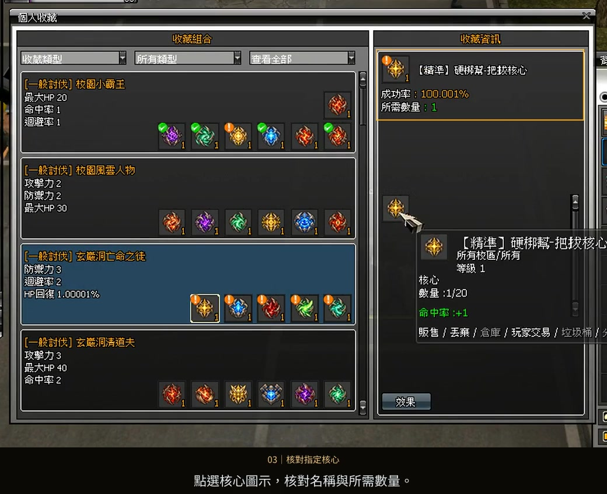
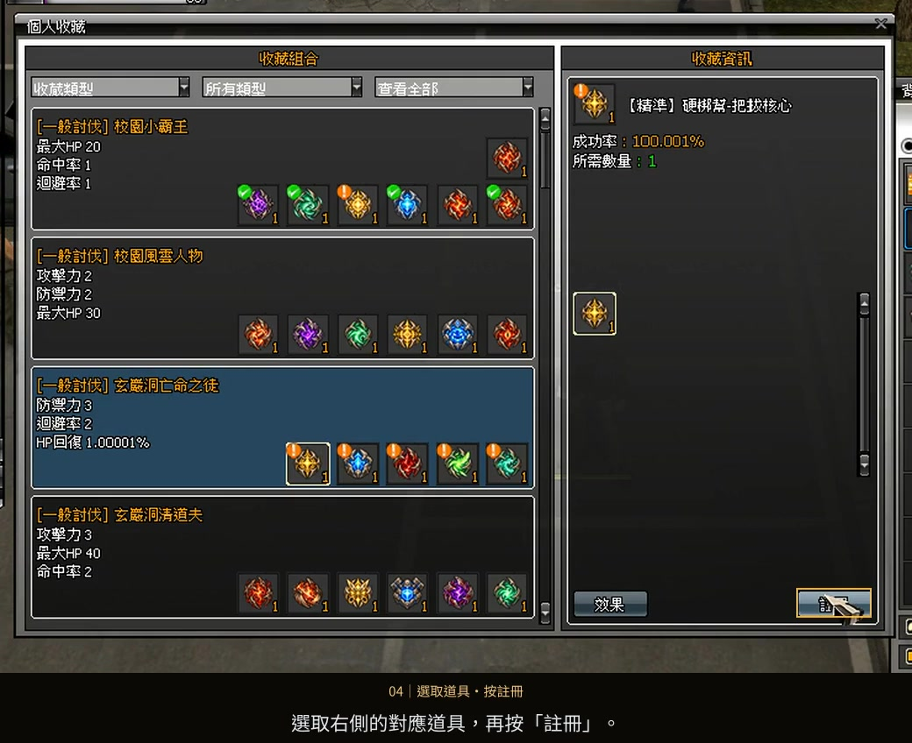
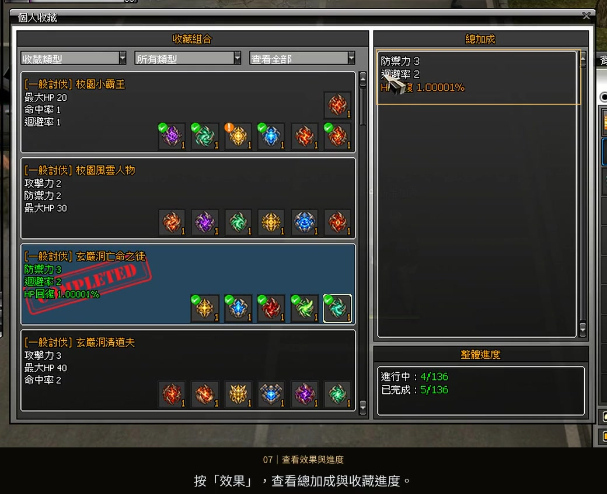

核對需求
確認指定核心
點選收藏組合中的核心圖示，核對右側的名稱與所需數量。
遊玩指南 03 / 收藏介紹
開啟個人收藏，查看組合需要的核心與能力加成。
依序登錄指定道具，最後查看效果與完成進度。
影片暫時無法載入，請重新整理或使用下載影片連結。下方圖文仍可查閱。
選擇步驟，跳到對應操作。
「註冊」是遊戲內的按鈕名稱，指將指定核心登錄到收藏。影片為操作示範；需求、成功率與能力數值請以正式遊戲及收藏圖鑑為準。

點選收藏組合中的核心圖示，核對右側的名稱與所需數量。

選取右側的對應核心，再按「註冊」。登錄成功後，圖示會出現綠色勾勾。

按下「效果」，查閱能力加成與收藏進度；完成的組合會顯示完成標記。